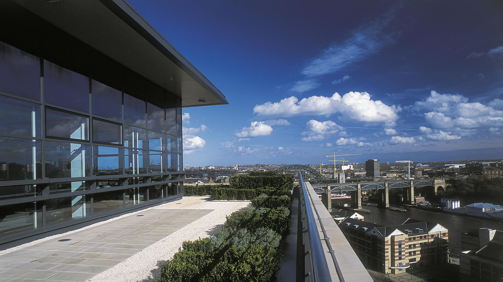

These groundbreaking Grade A office developments are situated adjacent to Newcastle Central Station. Parabola delivered both buildings on a speculative basis and both were fully let on practical completion, delivering new headline rents to the city of Newcastle. More importantly they set a new national benchmark in the standard of commercial accommodation.
Size:
Central Square: 75,000 sq ft
Central Square South: 86,000 sq ft
Awards:
‘Best Refurbished Workplace’ at 2001 British Council for Offices (Central Square)
Architects:
Carey Jones
Main contractor:
Sir Robert McAlpine
Cost consultant and employers agent:
Gardiner & Theobald

An outstanding example of regeneration in its purest form” — BCO
Central Square
Central Square South
Edinburgh 101 George Street, Edinburgh EH2 3ES
Newcastle upon Tyne Central Square, Forth Street, Newcastle upon Tyne NE1 3PJ